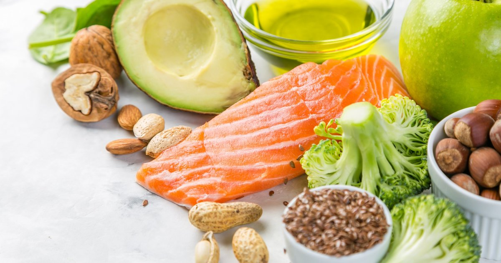

Ernährung: Basis für ein gesundes Leben
Geschmäcker sind verschieden
Kinder mögen andere Speisen als Erwachsene. Ältere Menschen haben einen anderen Energiebedarf als junge Menschen, die körperlich arbeiten oder viel Sport treiben. Wer abnehmen möchte, muss andere Regeln beachten als ein Mensch, der Untergewicht hat. Und nicht jeder möchte vegetarisch leben und künftig nur noch im Bioladen einkaufen. Dem Stand der Ernährungswissenschaft entsprechen zum Beispiel die Empfehlungen der Deutschen Gesellschaft für Ernährung e.V. (DGE) in Bonn. Sie basieren auf fundierten wissenschaftlichen Erkenntnissen. Manche Lebensmittel gelten als ernährungsphysiologisch empfehlenswerter – zum Beispiel Obst, Gemüse, Fisch, fettarme Milchprodukte, fettarmes Fleisch, Rapsöl, Trink- und Mineralwasser. Als weniger empfehlenswert gelten unter anderem Limonaden oder Süßigkeiten, sie sollten laut DGE nur in Maßen verzehrt werden. Wie in vielen anderen Lebensbereichen gilt es auch bei der Ernährung, das rechte Maß zu finden – passend zum jeweiligen Alter, Energiebedarf und Gesundheitszustand. Denn mit einer sinnvoll zusammengestellten Ernährung kann das Wunschgewicht erreicht und langfristig gehalten werden. Zudem lassen sich so Krankheiten verhindern und Krankheitsabläufe unter Umständen positiv beeinflussen. Wie kann eine gesunde Ernährung aussehen? Viele Anregungen finden Sie hier auf dieser Seite. ">Wer sich halbwegs abwechslungsreich ernährt und nicht mehr isst, als sein Körper verbrennt, macht alles richtig. Das sind Erkenntnisse, die den meisten Verbrauchern offensichtlich nicht klar sind – die Angst davor, sich nicht gesund genug zu ernähren, wächst.
Lieber gesund als lecker
Eine Umfrage der Technikerkrankenkasse hat ergeben, dass 45 Prozent der Deutschen beim Essen in erster Linie darauf achten, dass es gesund ist – "lecker" schaffte es bei dieser Umfrage nur auf Platz 2.
Ingrid Mühlhäuser, Professorin an der Universität Hamburg, untersucht medizinische Studien auf ihre Werthaltigkeit. "Das Problem bei allen Ernährungsstudien ist die Methodik. Eine Pharmastudie ist verblindet und placebokontrolliert. Aber Sie wissen ja, was Sie gegessen haben. Meistens wird einfach nur nachträglich gefragt, was gegessen wurde. Die einzige wirklich gute Studie, mit einer großen Teilnehmerzahl und über acht Jahre hinweg, hat ergeben, dass es völlig egal war, wie sich die Probanden ernährt haben. Krebs, Herzinfarkt, Schlaganfall, Diabetes – alles gleich."
Peter Nawroth von der Universität Heidelberg und Andreas Fritsche von der Universität Tübingen ärgern sich über den Stellenwert, den die Regeln der DGE in der Gesellschaft haben: unwissenschaftlich und durch nichts belegt, lautet ihr Fazit. Die Bedeutung von gesunder Ernährung für ein längeres, gesünderes Leben wird aus ihrer Sicht dadurch völlig überschätzt. So wird ein gigantisches Geschäft befeuert: Ernährungsberater, Lebensmittelindustrie, Verlage – alle verdienen an der Angst vor Fehlernährung, obwohl die Menschen selten zuvor besser und nährstoffreicher ernährt waren als heute.